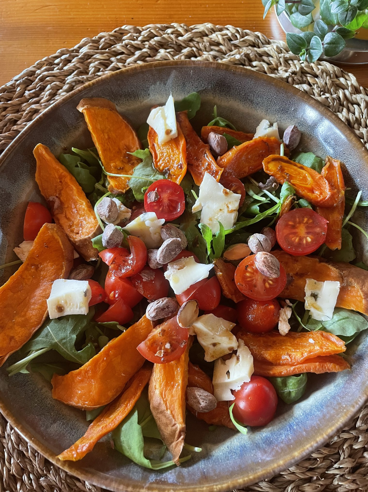

Boniato y zanahoria al horno con queso, cherrys, pistachos y rúcula
Ingredientes
2×
- 1 boniato
- 2 zanahorias
- aceite de oliva
- sal
- 2 puñados de rúcula
- 1 puñado de tomates cherry
- 60 g de queso
- 1 puñado de pistachos

Preparación
Paso 1
Cortar 1 boniato y 2 zanahorias en gajos, aliñar con aceite de oliva y sal y hornear 30min a 200ºC.
Paso 2
En un plato, poner 2 puñados de rúcula, las verduras al horno, 1 puñado de tomates cherry cortados por la mitad, 60 g de queso en trocitos y 1 puñado de pistachos.
Resumen
1 boniato
2 zanahorias
aceite de oliva
sal
2 puñados de rúcula
1 puñado de tomates cherry
60 g de queso
1 puñado de pistachos
Cortar aliñar hornear 200ºC